孖仔帮
公众号ID：twinsbang
关注
文|圆圈妈
网图|侵删
今天是母亲节，这是我的第5个母亲节，作为一位双胞胎妈妈，我已有5年的工作经验了，资历尚浅，请多多指教。
昨晚无意间翻看了以前的朋友圈，记录的都是这5年来当妈之后的心路历程，看到某些画面和文字时，往事历历在目，顿时老泪纵横…
天知道我究竟是怎么熬过来的！？
今天这篇就不聊娃了，趁着母亲节，给大家晒一晒双胞胎圆圈妈妈那段被隐藏的朋友圈，看看有没有戳痛你。
Mother's Day
▲2015年7月，躺医院保胎18天，终究没熬到36周，35周+5D,一个翻身就破水了，直接往手术室送，毫不犹豫剖了，连挣扎一下都没有。
这是刚下手术台转到病房时，平卧禁食禁水，气若游丝，有气无力地口述，由圆圈爸负责打字发出的报喜，也是第一次正式对外官宣，我当妈妈了，是对双胞胎。
其实我更想说的是，谢天谢地，我还活着！
因为俩娃出来后就被送去新生儿科了，没在身边，我对升级妈妈这件事一点概念都没有，看着旁边的产妇为了开奶痛得死去活来，为了喂奶彻夜难眠，我只觉得我很另类。
Mother's Day
▲两个软趴趴的小奶娃一前一后出院了，这是我第一次抱他们。
我曾经无数次地想象着我们仨相遇的那一刻，却从未想过是这样的心态迎接两个新生命的到来。
当我把他们搂在怀里时， 哭得一塌糊涂，旁人觉得我是思念儿子，真情流露。
错，我是担心在深圳养两儿子，养不起，苦了娃，瞬间悲从中来。我可以吃粗糟糠，喝西北风，睡大街，但绝不能苦了我的娃儿们。
Mother's Day
▲这是我产后第一次外出，坐公交车去买奶粉，拎着4罐奶粉上车时，司机的眼神和自动语音播报让我从此以后与“胖大姐”的标签自动对号入座：“...请给老弱病残孕让座。”马上就有一个帅小伙给我腾出一个孕妇专用座。
老弱病残孕？我都不是，我只是刚生完一对双胞胎，五脏六腑还没归位，肚子还没复原，没别的！
Mother's Day
▲刚满月没多久，圆圆脑炎住院，下了病危通知书，上了呼吸机，交完住院费后，才发现奶粉罐空了，尿不湿也用完了，钱呢？
这是我再一次受贫穷的威胁，好不容易大学毕业工作赚钱有点积蓄了，生了俩娃后，一朝回到解放前。
我和圆圈爸坐在医院大门口的台阶上，互相依靠着，谁都不说话，彼此心照不宣：为了俩娃，我们不能穷。
Mother's Day
▲这是第一次看到他们笑，3个月了，第一次！
我记得，我看到他们笑的时候，不是跟着笑，而是眼眶的泪水直打转，吧嗒吧嗒往下掉，又哭又笑...
尤其是看到圆圆的笑容，这个曾经经历了一场异常凶险的脑炎，再一次被我们从死神手里夺回来，被医生预言可能会有脑瘫后遗症的小男娃，我的大儿子，他笑了！
Mother's Day
▲这是他们哥俩的一次重感冒，发烧咳嗽拉肚子，而且是两个人同时一起来，从凌晨两点折腾到早晨6点，想睡不能睡，能睡不敢睡，只能盯着闹钟打鸡血。
这个夜晚，我听到了时针上奔腾的海水,看到了分针上跳动的火焰，科比凌晨4点的洛杉矶也不过如此。
而这样的夜晚，并非偶然，竟是常态。
Mother's Day
▲这是我的第一个母亲节，带着口罩是因为我当时正在感冒中，生娃后体质很差，每个月都会感冒一次，这种半残不废的状态整整持续了一年。
只能说剖腹产很伤，月子里没有休息好很亏，究根结底，一口气来一对双胞胎，很怂。
Mother's Day
▲满1岁的他们，越长越像了，刚出生时，头型不一样，长得不像，还以为抱错了。
现在看来是我多虑了，如今看这张照片，我要扫描很久才能认出谁是圆圆，谁是圈圈。
对于他们俩的长相，我最大的感受就是，很多照片刚拍出来时，可以马上分得清，隔段时间再看，就傻傻分不清了。
Mother's Day
▲家有双胞胎的一大特点就是，什么东西都是一式两份，剪指甲也不例外。
这个任务由始至终都是队友完成的，自从有一次我给圈圈剪指甲不小心给剪出血后，队友就再也不让我碰他的儿子们一根手指头，包括一根汗毛。
也罢，像我这么粗心大意的女人，这么细致的活儿做起来真的很像一个后妈在虐娃。
Mother's Day
▲这是我和队友升级爸爸妈妈后爆发的一次特大矛盾，具体原因已经忘记了，总之冷战了1个月，最后我们因为这张图和好了，寓意是：即使再生气，也会忍不住关心你！
因为生的是双胞胎，更让我们深刻明白那句歌词：“团结就是力量，这力量是铁，这力量是钢，比铁还硬，比钢还强”
因为生的是双胞胎，我和队友从如胶似漆的小夫妻活出了肝胆相照的难兄难弟。
关心彼此才能抱团取暖，才能活着笑到最后。
Mother's Day
▲1年半了，我鼓足了勇气，终于敢站上去了。
自从那次被公交车司机当孕妇处理后，我把体重秤压到了箱底，眼不见为净，我想我已经在努力减肥了，应该没问题的。
结果，称碎了，我的心也碎了，无声的呐喊着：“个天呐，还我小蛮腰！”然而，那白花花的肚子和皱巴巴的赘肉，无时无刻不在嘲讽我：“叫你生双胞胎，哈哈哈！”
Mother's Day
▲准备2岁的圆圈，我和队友渐渐地摆脱了“小白”“新手”的标签，照顾两只四角吞金兽，早已信手拈来。随着屎尿屁离我们越来越远，我们有更多时间，更多心思带着两只娃出去到处浪了。
非常怀念这个时候的圆圈，轻松好管理，往小推车一放，可以在深圳湾公园溜上一整天，不哭也不闹，而不是像现在这样，去外面玩像放监一样，两腿一撒，跑开了，一眨眼功夫，人呢？
Mother's Day
▲这是圆圈爸的第一辆车，我一直不能理解男人与四个轮子的汽车会有怎样的情结，但现在我懂了。
我永远忘不了他试驾车时那神采飞扬的眼神，还有他说要带我们仨去兜风时那“屌屌的样子”，大概是他觉得车给他身份的象征，给他安全感，给他信心更能保护好他的妻儿。
其实我很想告诉他，今儿，你哪怕是推着独轮小推车带我们仨去兜风，只要你敢推，我也愿意上。
Mother's Day
▲我们在深圳有家了，想起没钱买奶粉尿不湿的狼狈日子，陡然觉得恍如隔世。
李安在《十年一觉电影梦》提到，生孩子会转运。的确，自从那次缺钱被逼到走投无路后，圆圈爸就像开足马力的战斗机，为了养活他的儿子们和他的小媳妇，一路开挂式地前进着。
Mother's Day
▲这是一次不可思议的挑战，圆圈哥俩爬上了鹏城第一峰，全程都是他们自己走上去的，当然，代价也很惨，我和队友人手一个娃，背着他们下山，摸黑走了5公里的山路，差点要CALL"狗狗汪汪队”来救援。
那次，我真真切切感受到母爱的力量居然可以超越极限，想当年我拎着半斤西瓜都会喊累，当时抱着30斤重的小肉团，却能一路狂奔，健步如飞。
Mother's Day
▲这是我离开职场回归家庭时发的朋友圈，正式离职那天晚上，我哭了一宿，看着熟睡的圆圈，又觉得没啥好后悔的，事业而已，赚多少钱还是赚，娃儿们的成长能有几年。
我用了一张黄金梅丽号被烧的配图，寓意是告别过去，重新出发。我的航行并不会因离开职场而葬送火海，相反，我转变了航线，继续前行。
去一个更需要我的地方，做着平凡但很伟大的事业：当妈妈，当双胞胎的妈妈，随叫随到的那种。
离开职场后，我依然惦记着内心那点小骄傲，依然改不了喜欢折腾的坏毛病，于是开始码字，带娃的同时，开了公众号建了双胞胎社群，收获了一大批云闺蜜，与一群优秀的学霸妈妈们和战斗机奶爸们探讨养育双胞胎之道。
后面的朋友圈，如大家所见，基本上都是一个全职双胞胎妈妈每天都在分享公号推文，刷存在感。
母亲节快乐
养育双胞胎的第一年，会感到特别的累和绝望，那种累不是休息几天就能缓解，那种绝望也不是多花点人民币就能解决的，是一种由内而外，对生活，对未来一种彷徨和莫名的恐惧。
这大概是所有我们这一代妈妈们的共性吧，可能作为双胞胎妈妈的我，会更加深刻些，好在这一路跌跌撞撞，磕磕碰碰的终于熬过来了。
有一次在妈妈群看到一张截图，竟然红了眼眶。
的确，5岁的圆圈现在已经不喜欢我抱他们了，每天早晨都赖床不肯起来。
曾经，经常半夜起来要喝奶，
曾经，经常一起哭，要抱要哄，
曾经，经常天还没亮就起来咬自己的手卖萌
...
那两只小奶娃，真的长大了。
那些一大两小一起哭，深夜奶娃，抱睡哄睡的日子也终将成为过去式。
好好享受当双胞胎妈妈的怂样和牛逼样，同时也好好爱我们的双胞胎孩子们吧，因为他们也爱着你，莫纠结为何要生双胞胎，借一个网友的评论：那些凭我们而来的孩子，都是因我们而来的。
最后想对我的儿子们说：只愿你们是天上的两颗星星，永远闪闪发光，也愿你们是地上的两棵树，越长越高。
有你们在，每一天都是母亲节！
你呢？当双胞胎妈妈的你，几岁了？
有哪些最幸福或者最崩溃的瞬间要分享的吗？
欢迎留言区冒泡哦！
-END-
今日互动话题
#当双胞胎妈妈的你，几岁了#
评论区聊一聊呗！
微信公众号：孖仔帮
ID : twinsbang
专注双胞胎孕育，养育，教育经验分享
扫码关注我们
点一下你会更好看耶

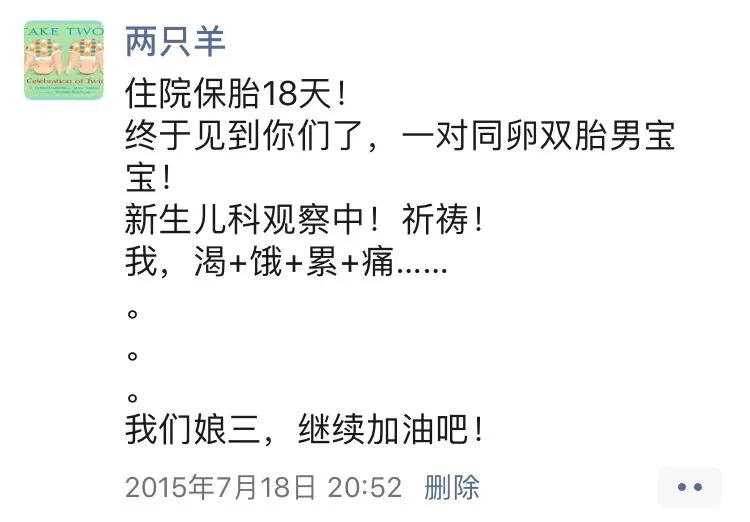
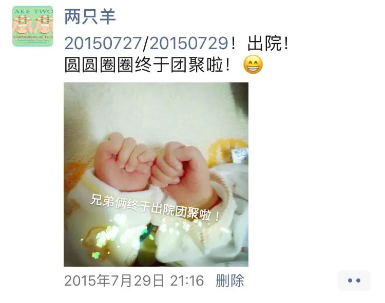
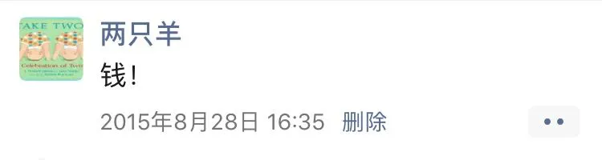
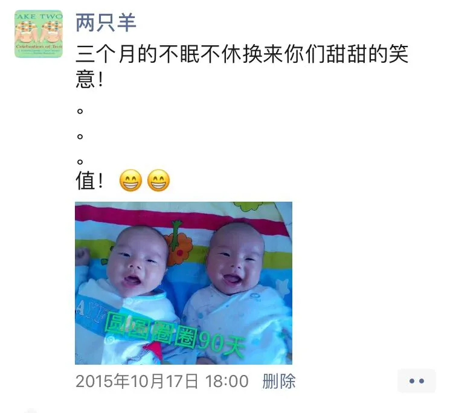
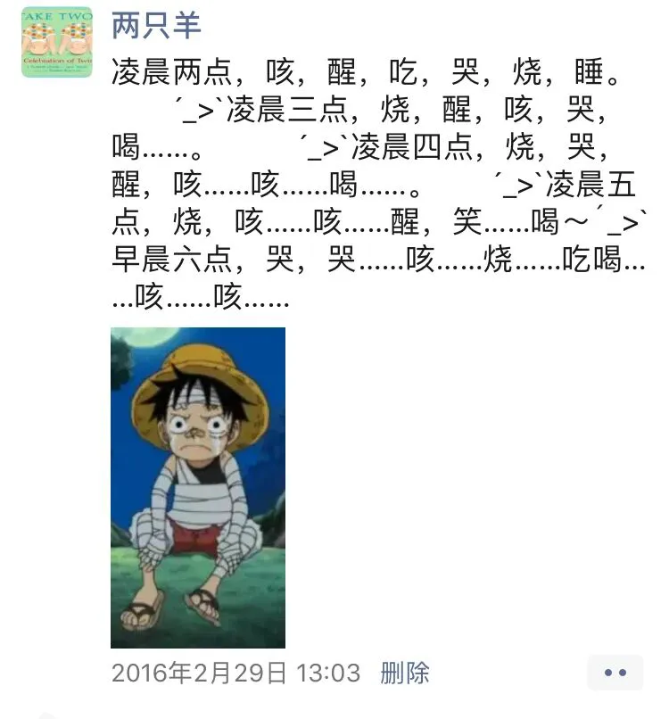
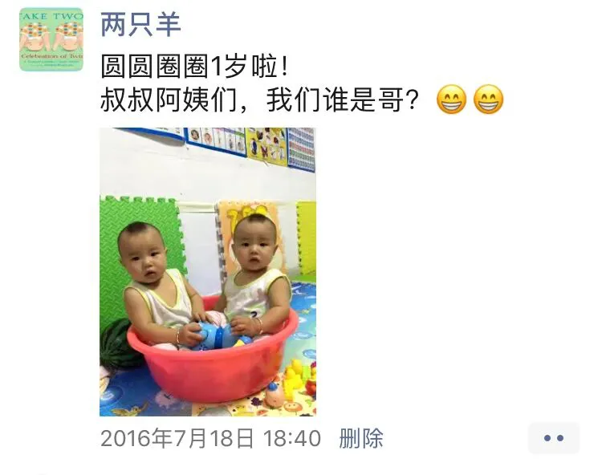
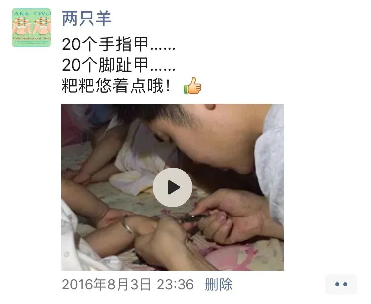
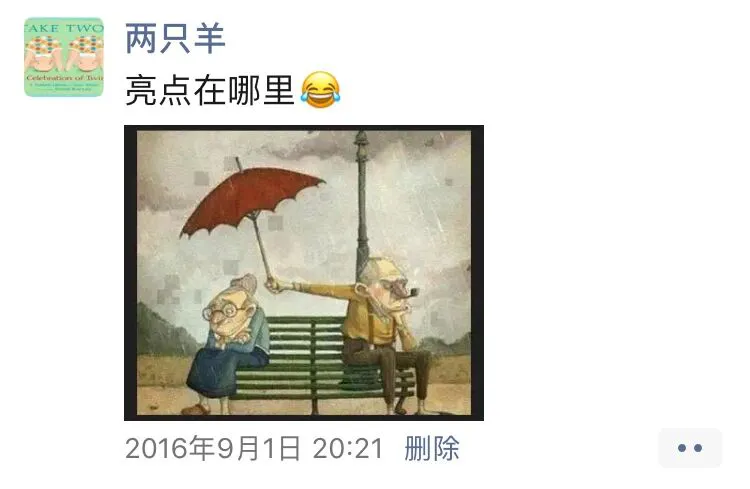
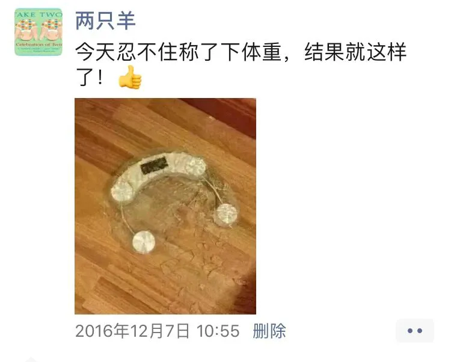
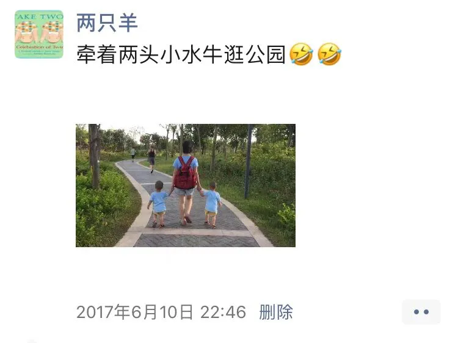
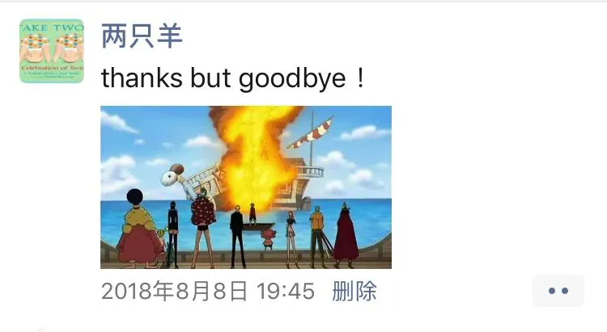
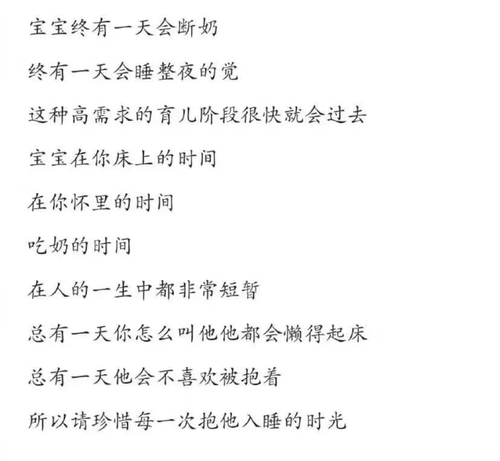
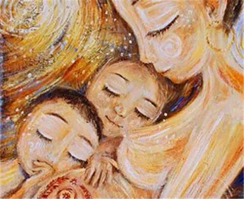